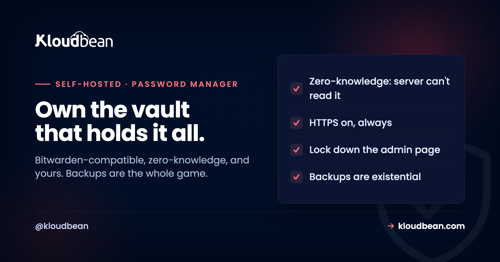

Self-Host Vaultwarden: Own the Vault That Holds Everything Else

Self-hosting most tools is a convenience or a cost decision. Self-hosting your password manager is different, because it is the one service that, if it holds anything, holds everything: every other login you own. That makes people nervous about it, and mostly for the wrong reason. The real risk of self-hosting Vaultwarden is not that someone reads your passwords off your server, because of how the encryption works they cannot. The real risk is that you lose the server and its backups and take every password with it. Get that one thing right and Vaultwarden is one of the most rewarding tools you can run yourself.
Vaultwarden is an unofficial, Bitwarden-compatible server written in Rust, formerly called bitwarden_rs. It works with the official Bitwarden client apps but is far lighter than Bitwarden's own self-hosted stack, running as a single service that uses SQLite by default, or PostgreSQL and MySQL for bigger setups. It is worth self-hosting if you want to own your password vault and skip per-seat pricing for a family or team, and if you can commit to two things: HTTPS always on, and backups you actually test. The reassuring part is the zero-knowledge model, your master password never reaches the server, so the server only ever stores an encrypted blob. The demanding part is that if you lose the server and its backups, the passwords are gone for good, because nobody else has a copy.
What Vaultwarden actually is
Worth being precise, because the naming confuses people.
Bitwarden is a popular password manager with official client apps and an official server you can self-host. That official server is deliberately enterprise-grade and heavy: it is built around Microsoft SQL Server and several services running together, which is a lot to run for a household or a small team. Vaultwarden is a separate, community project, an alternative server implementation written in Rust that speaks the same API as Bitwarden, so the official Bitwarden apps on your phone and browser talk to it happily, while it runs as one lightweight service. It uses SQLite out of the box and supports PostgreSQL or MySQL when you want a proper database behind it.
So you get the polished official client apps and the ecosystem, with a server light enough to run on a small managed server rather than a cluster. That combination is why Vaultwarden, not the official server, is what most self-hosters actually run.
Why self-host it, and the honest caveat
Two real reasons, and one condition you have to accept before you start.
You own the vault. Your passwords live on infrastructure you control, not a third party's, which some people want on principle and some need for policy reasons. You escape per-seat pricing. Sharing a managed password manager across a family or a small team adds up per user per month; a self-hosted Vaultwarden serves all of them from one small server. You get the paid features free. Vaultwarden enables organisations, sharing, and other capabilities that cost extra on hosted plans.
The caveat, stated plainly because it is the whole decision: you are now responsible for this vault being available and recoverable. A hosted password manager has a team keeping it online and backed up. Self-host it, and that team is you. If you cannot honestly commit to keeping the server up and to real, tested backups, you should not self-host your password manager, and there is no shame in that. Use hosted Bitwarden and spend your attention elsewhere. This is the rare self-hosted tool where "I'll get to the backups later" is a genuinely dangerous plan.
Why it is safer than it sounds: the zero-knowledge model
The fear most people have, that self-hosting passwords means the server can see them, is simply not how it works, and understanding why removes most of the anxiety.
Bitwarden, and therefore Vaultwarden, uses an end-to-end encrypted, zero-knowledge design. Your master password never leaves your device. Your vault is encrypted and decrypted in the client app using a key derived from that master password, and what travels to and sits on the server is an encrypted blob the server cannot read. The server's job is to store that blob and sync it between your devices, not to understand it.
The practical consequence is reassuring: if someone compromised your Vaultwarden server and stole the database, they would get encrypted vaults, not your passwords, provided your master password is strong. So the server being yours rather than a vendor's does not expose your passwords to your own server in some new way. What a strong master password protects, it protects the same way whether the server is Bitwarden's or yours.
The setup, in shape
Vaultwarden is genuinely quick to stand up. The decisions that matter are the database, HTTPS, and locking the admin page.
- Database. SQLite by default is fine for a household or a small team and keeps things simple. For a larger team or if you want backups and scaling handled properly, point it at managed PostgreSQL or MariaDB instead, which also makes the vault's data part of a managed backup routine rather than a file you have to remember.
- HTTPS, always. Vaultwarden must sit behind HTTPS. It is not optional for a password service, and the clients expect it. This is where free, auto-renewing SSL earns its keep, so the certificate is never the thing that lapses.
- A reverse proxy in front, terminating TLS and forwarding to Vaultwarden, including its WebSocket notifications so clients sync live. If reverse proxies are unfamiliar, the reverse proxy guide covers the shape.
- The admin page, gated behind an admin token. Set a strong token, or disable the admin page entirely if you do not need it, because it is a powerful surface.
- Registration, which you almost certainly want to disable after creating your own accounts, so the internet cannot sign up on your vault server.
The three things you cannot get wrong
Most Vaultwarden guidance is a list of nice-to-haves. These three are not optional.
1. HTTPS on, every time. A password service reachable over plain HTTP is a mistake, full stop. Terminate TLS at the proxy with a certificate that renews itself so it never silently expires and breaks your clients or, worse, tempts you to disable HTTPS to get back in.
2. Lock down the admin page. The admin interface can reconfigure the server and manage users. Protect it with a strong admin token, restrict who can reach it, or disable it when you are not using it. Treat it as the master key to the master key store.
3. Backups are existential, not routine. This is the one that actually matters and the one people skip. Because the vault exists only on your server, its backup is the only other copy of every password you own. Lose the server without a backup and there is no support line, no reset, no recovery: the passwords are gone. So backups here are not hygiene, they are the whole safety model, which is the next section.
Backups: the only part that is truly non-negotiable
Say it plainly: with a self-hosted password manager, an untested backup is a bet that the day you need it, it works. Do not make that bet with your passwords.
The vault must be backed up off the server it runs on, automatically, and you must have restored one at least once to know the restore works. The general discipline is in the backups guide, and it applies here with the stakes turned up: a database dump for the vault (SQLite file or a Postgres dump), the attachments if you use them, and the config, all shipped off-box to object storage, on a schedule, with a restore you have actually performed. If you take one thing from this article, take this: set up automatic, off-box, tested backups before you move your real passwords in.
When not to self-host it
A clear line, because for this tool the wrong call is expensive.
If you cannot commit to keeping the server updated, HTTPS on, and backups automatic and tested, do not self-host your password manager. The convenience is not worth risking the keys to your whole digital life, and hosted Bitwarden is genuinely good, inexpensive for an individual, and run by people whose job is exactly this. Self-host Vaultwarden when you want ownership, want to serve a family or team without per-seat fees, and are willing to own the small amount of operational discipline it demands. That is a real and common set of reasons; just make the choice with eyes open rather than drifting into hosting your passwords without a backup plan.
The hosting side of self-Host Vaultwarden
Vaultwarden is light, so it does not need much server. What it needs is exactly the boring, reliable things a managed platform is good at, which is a nice fit. Free auto-renewing SSL means the mandatory HTTPS is handled and never lapses. Automatic off-box backups are the existential safety net this specific tool lives or dies by, running without you remembering. A managed reverse proxy handles TLS termination and the WebSocket sync. And if you outgrow SQLite, managed PostgreSQL or MariaDB puts the vault's data on a database that is itself backed up. All on a small server across any of seven clouds, in one dashboard.
The honest boundary matters more here than anywhere. The platform keeps the server, TLS, and backups healthy; your master password, your client apps, and the decision to hold your own keys stay entirely yours. The platform can make the vault available and recoverable. It cannot, by design, help you into the vault, and that is exactly the property you wanted.
Working past self-Host Vaultwarden
For the wider set of things worth running yourself, the best self-hosted tools guide, and for files rather than passwords, self-hosting Nextcloud. The backups this tool depends on are in the server backups guide and S3-compatible object storage. For the database option, managed PostgreSQL, and for the HTTPS layer, the reverse proxy guide. Keeping secrets out of code more generally is environment variables done right.
Own your vault, with the backups handled.
Run Vaultwarden on a small managed server across seven clouds, with free auto-renewing SSL for the mandatory HTTPS, automatic off-box backups as the safety net, and managed PostgreSQL or MariaDB when you outgrow SQLite. Start at kloudbean.com or see pricing.
Small managed server · Free auto-renewing SSL · Automatic off-box backups · Managed databases
FAQ
What is the difference between Vaultwarden and Bitwarden?
Bitwarden is the password manager with official client apps and an official, enterprise-grade self-hosted server built around Microsoft SQL Server. Vaultwarden is an unofficial, community server written in Rust that speaks the same API, so the official Bitwarden apps work with it, but runs as a single lightweight service using SQLite by default. Most self-hosters run Vaultwarden precisely because it is far lighter to operate while keeping the polished official clients.
Is it safe to self-host my passwords with Vaultwarden?
Yes, with two conditions. The encryption model is zero-knowledge: your master password never reaches the server and the vault is decrypted only in the client, so the server stores an encrypted blob it cannot read, and a stolen database yields encrypted vaults rather than passwords when your master password is strong. The conditions are that you keep HTTPS on and that you maintain tested backups, because losing the server and its backups means losing the vault permanently.
Can my server read my passwords if I self-host Vaultwarden?
No. Decryption happens in the client app using a key derived from your master password, which never leaves your device. The server only ever holds and syncs an encrypted blob. That is the whole point of the zero-knowledge design, and it holds whether the server is Bitwarden's or your own, so self-hosting does not expose your passwords to the server.
What database does Vaultwarden use?
SQLite by default, which is perfectly adequate for an individual, a household, or a small team. For larger deployments, or to put the vault's data on a properly backed-up managed database, it supports PostgreSQL and MySQL. Moving to a managed PostgreSQL also folds the vault into an automatic backup routine instead of a file you have to remember to copy.
Why are backups so important for a self-hosted password manager?
Because the vault exists only on your server, so its backup is the only other copy of every password you own. Unlike a hosted service, there is no provider holding a copy and no recovery process if it is lost. If the server dies and you have no backup, the passwords are gone for good. That is why backups for Vaultwarden are not routine hygiene but the entire safety model, and why you should set up automatic, off-box, tested backups before importing real passwords.
Does Vaultwarden need HTTPS?
Yes, always. It is a password service, the clients expect a secure connection, and running it over plain HTTP is not acceptable. Put it behind a reverse proxy that terminates TLS with a certificate that renews itself automatically, so HTTPS never silently lapses and breaks your clients. Free auto-renewing SSL removes the main reason people are tempted to cut this corner.
When should I use hosted Bitwarden instead of self-hosting?
When you cannot confidently commit to keeping the server updated, HTTPS on, and backups automatic and tested. Hosted Bitwarden is inexpensive for an individual and run by a team whose job is exactly this, so it is the right choice if the operational discipline of self-hosting your most sensitive service is more than you want to own. Self-host Vaultwarden when ownership, avoiding per-seat fees, or serving a team make the small amount of upkeep worth it.
Can Vaultwarden serve a whole family or team?
Yes, and it is one of the main reasons to run it. A single lightweight instance can serve a family or a small team, with organisations and sharing enabled, avoiding the per-user monthly cost of a hosted plan. Disable open registration after you create the accounts you need, so only your people can have vaults on the server.